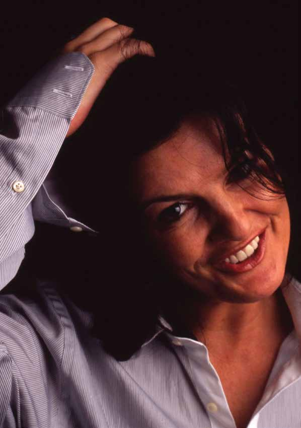

Deirdre O' Kane Public Interview

The Public Interview makes its debut at Drogheda Arts Festival this year. We're proud to start what we hope will be an annual element of the programme with one of the most accomplished and versatile actors of her generation - Deirdre O'Kane. Deirdre O'Kane has many film, stage and television credits to her name, the most recent being Sky's acclaimed (and award winning) comedy series, Moone Boy. Deirdre's latest film role is the award-winning Noble, which will be released in August.
Deirdre will be interviewed by Irish Times Arts writer, Tony Clayton-Lea.
Saturday 3 May
Venue: Beaulieu House, Great Hall
Times: 3:00pm Sat 3 May
Tickets: 5 in advance, 7 on day